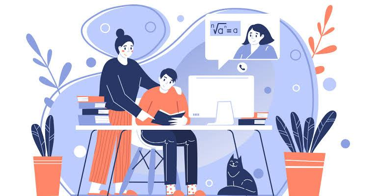
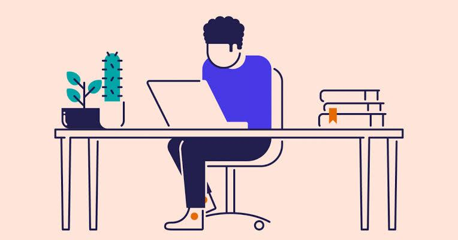

Advantages :

Save time
Summarises all your lectures, makes your process of learning simpler. Also, helps students to revise easily at the time of their examination.
Personalized learning
This helps a student to revise the concept in a well-structured manner. This feature helps in last-minute revision.

Free
It’s free of cost! To make the study easy, and accessible to all the students, and can benefit from the same.
Things I Can Do
Make easy comprehensive notes, which can be easily used for self study purposes, revise any chapter in minutes just before an exam and present notes in a well articulated manner.
- Write all the notes
- Stack all of it in pdf format
- Read books & shorten them
- Lightning speed
Title: Meditation Cures Stress and Insomnia
Stress and sleep deprivation is a major problem for sound health and sound mind. So, it interferes with the performance of our memory and immune system. It also reinforces our negative outlook and bad mood. So, our best ideas and memories can come to us only if we have good sleep and stress free life. In. fact, stress management can maximize opr brain power. Hence, the hour of need is to practise meditation in order to solve the issue of stress and sleep deprivation. Above all, meditation is a bliss to gain health benefits and religious and spiritual life.
SUMMARY IN POINTERS:
•Problems of sleep deprivation
I. Lack of a good night’s sleep
(i) affects our health and mind
(ii) is a problem of aging stress
(iii) causes mental problem
(iv) intrfrs with performance of our memory
II. Good memory and mood
(i) need good sleep
(ii) can improve your immune system
(iii) help to have your +ve outlook on life
(iv) can save you from insomnia
III. Regular meditation
(a) has health benefits
(b) brings about good sleep
(c) helps reducing stress
(d) empowers your religious and sports life